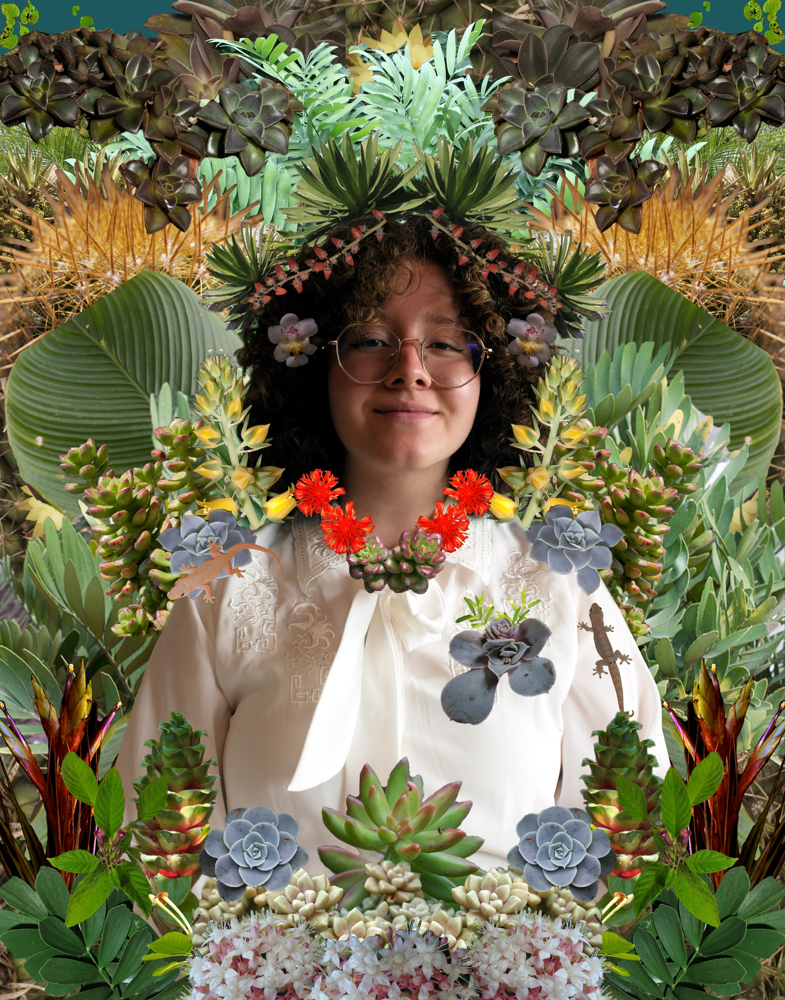

Frida Calvo Huerta
About

I am an interdisciplinary artist, designer and researcher based in the unceded ancestral homeland of the Ramaytush Ohlone (San Francisco, California). My projects explore the intersection between mental health, community-building, disability justice, class consciousness and cultural pride. I'm currently working on my web development skills and illustration portfolio for children's books. I recently graduated from UC Berkeley with a BA in Interdisciplinary Studies, combining Art/Design, Anthropology and Public Health.
Experience
Coursework
- In Progress: Code the Dream Learns [JavaScript, HTML, CSS]
- UC Berkeley (Coding): (DATA8) Intro to Data Science [Python]; Intro to Biostatistics & Probability [R]; Intro to Epidemiology
- UC Berkeley (Design): Intro to Figma; User Experience Design; Visual Communication; New Media Experimentations; Art of Public Health; Public Health Innovation Consulting
Work Experience
-
Community Programs and Partnerships Intern at San Francisco Public LibraryJune - July 2026I supported community engagement across the city, staffing outreach tables at events like Stern Grove Festival, SFMOMA Family Days, and Cal Academy Night Life to sign people up for library cards. I helped distribute FOG Literacy kits to school sites and ran Summer Stride book giveaways, and contributed to a qualitative evaluation of the Youth Engaged in Library Leadership (YELL) program.
-
Public Health Consultant at Community Health SynergyFeb - May 2025I conducted bilingual interviews with Ryan White HIV/AIDS Program clients at community-based clinics to improve care access for low-income patients, including those experiencing housing insecurity, to surface real barriers to care. My findings informed recommendations to a foundation's board on making grant applications more accessible to community health clinics.
-
Public Health Academic Researcher at UC Berkeley Graduate DivisionAug 2023 - May 2025Under a faculty mentor, I led original research on the mental health impact of the ScholarMentors Program, designing the study, securing IRB approval, and conducting 11+ in-depth interviews in English and Spanish. I secured $6,500+ in research funding and presented the findings at five academic conferences, including the Human Biology Association and the Othering & Belonging Institute's annual meetings.
-
Founder & Director of ScholarMentors Program at UC BerkeleyJune 2022 - May 2025I founded a college-access mentorship program for first-generation immigrant high school and community college transfer students, raising $90,000+ in institutional funding to bring it to life. Over three years I built and delivered the curriculum, trained 15 mentors, and partnered with campus and community organizations to help students navigate the college search, UC & CSU applications, financial aid, mental health resources, and transitioning to college life.
-
Curriculum Designer & Student Advisor at UC Berkeley Counseling & Psychological ServicesAug 2024 - May 2025Alongside a staff psychologist, I co-developed a student-run course centering creativity, mindfulness, and emotional well-being outside a clinical setting. I designed the syllabus, assignments, grading rubric, and lined up guest speakers spanning psychology, spirituality, and art practice, while also drafting a Wellness Fund proposal for future programming.
-
Teaching Artist & Program Facilator at First Exposures EYE2EYE Summer Artist ResidencyJuly - Aug 2024I created First Exposures' first peer-led artist residency, securing my own funding as teaching artist and designing a 7-week photography curriculum for emerging artists ages 18–24. I led a cohort of 9 transitional-aged youth through personal projects on the theme of Radical Hope, teaching cyanotype printing and darkroom skills, culminating in a public exhibition alongside veteran artists from the 6th on 7th Photography Workshop.
-
Artist in Residence & Youth Advisory Board Member at First ExposuresJune 2019 - Aug 2024Over five years, I produced five personal photography projects on family, ancestry, migration, and community, which became zines, a photobook, and gallery exhibitions at notable public institutions across the San Francisco Bay Area, such as the deYoung Museum, UCSF, Children’s Creativity Museum, SOMArts, Oakland Museum of California, Yerba Buena Center for the Arts, KQED, San Francisco Art Commission’s Market Street Kiosks and the Southeast Community Center. I served as a commissioned portrait photographer at the deYoung Museum, and I sat on the program's Advisory Board with full voting rights, and helped run an annual free portrait day for 400+ community members.
-
Community Outreach Coordinator at Community Well SFJune - Aug 2024I coordinated monthly food distribution events serving 200+ community members, managing volunteer staffing and pantry logistics to keep things running smoothly. I also spent time observing and shadowing the org's leadership team, then compiled a report of suggestions to support their strategic planning.
-
Event Coordinator at Platform Artspace @ UC Berkeley Art Practice DepartmentAug - Dec 2023I coordinated a semesterly student art market and managed space requests from departments across campus for showcases and alumni events. I also provided headshot photography for law school and EOP students as part of the fellowship.
-
Health Equity Consultant at UC Berkeley School of Public HealthAug 2022 - May 2023I led a 5-person student team consulting Thriving Pink, a breast cancer nonprofit, on diversifying their recruitment and program engagement, serving as client liaison and conducting bilingual interviews with Latina and metastatic cancer survivors. I also led a separate team partnering with UC Berkeley's University Health Services to apply the Total Worker Health framework, benefiting 700+ multicultural custodial workers through interviews and needs assessments in English and Spanish.
-
Business Owner & Event Photographer at Monarch Butterfly PhotographyAug 2022 - PresentI run my own event and portrait photography business, managing client relationships and contracts for weddings, nonprofit fundraisers, and community events. I handle everything from shoot to delivery — editing, invoicing, and payment — while making sure every client's expectations are met or exceeded.
-
Research Assistant at UC Berkeley Transportation Engineering DepartmentJune - Aug 2022I conducted 9 interviews with Spanish-speaking, low-income Bay Area residents about their housing and transportation needs for a graduate student mentor's thesis research. I transcribed, translated, and coded the interviews, then built personas that informed an academic publication and policy proposals to local government.
-
Teaching Assistant at First Exposures Summer Photography CampJuly - Aug 2022I helped facilitate a youth photography program on Treasure Island in partnership with the SF Arts Commission and Treasure Island YMCA, making arts education accessible to 24 low-income BIPOC middle schoolers.
-
Peer Mentor at NavigatingCal Program @ UC Berkeley Centers for Educational ExcellenceJan - May 2022I mentored a cohort of 25 nontraditional and historically marginalized students — including first-gen, low-income, and former foster youth — helping them access fellowships, internships, and faculty recommendations through a "community, not competition" model. I also supported students in navigating disability accommodations and basic needs resources like food security and emergency housing.
-
Interactive Design Intern at UC Berkeley's Visualization Lab for Digital Art HistorySep 2021 - May 2022I worked with the director of UC Berkeley's V-Lab to transform archival 2D artworks into virtual reality experiences, using Photoshop, After Effects, Artivive, and 3D modeling tools to bring historical art into an immersive format.
-
Community Engagement Intern at LYRIC SFJune - Aug 2020I led a cohort of 20 LGBTQ immigrant youth in creating an online resource guide covering healthcare, food banks, scholarships, and internships. I also facilitated virtual workshops on college applications, career readiness, and personal finance.